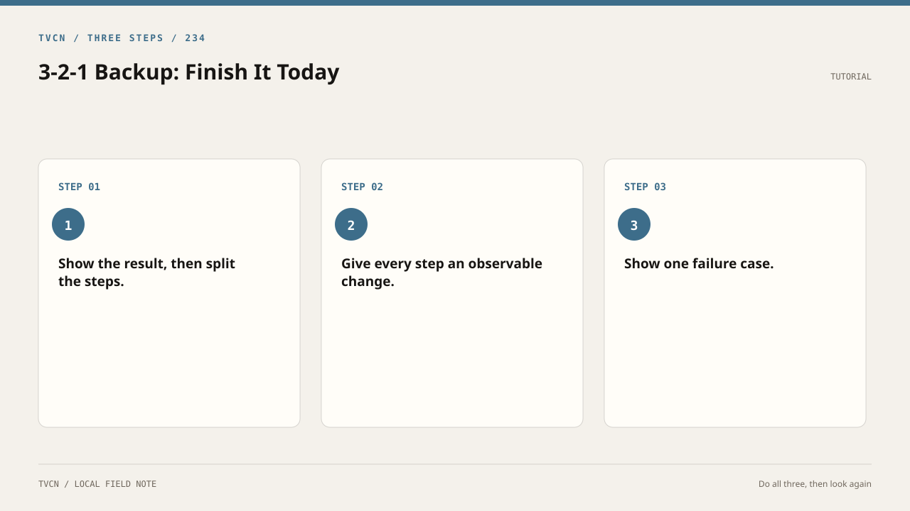

Three copies, two media, one off-site, same day
3-2-1 is not “upload to cloud and done.” On a shoot day make at least three copies: card/camera, on-set drive, and another offline drive or cloud. One copy sits in a different building.
Every copy must read: randomly play one file and check name and duration. “Copy completed” is not a backup.
Limits
RAID is not backup, and a sync folder is not backup. A deletion syncs; ransomware encrypts the whole set. Keep at least one offline, read-only or versioned copy.
On set
Copy the card to an SSD, then to another drive, then to NAS or cloud. Format the card only after three copies exist.
Three-step flow

Do this
3-2-1 backup finishes the same day: three copies, two media types, one offsite; wait until tomorrow and the media may be gone.
- Copy the card to SSD the same day.
- Copy to a second drive.
- Upload to NAS or cloud, and format the card only after three copies.
Avoid
Do not plan to back up tomorrow; if the card is lost, three copies never happen.
Image note. Covers, diagrams and step images on this page are editorial illustrations or structure diagrams, not photographs of a test performed here; they are not evidence of measured gear performance. Where an image is AI-assisted, the caption says so. Read the test conditions in the text before treating an image as proof.